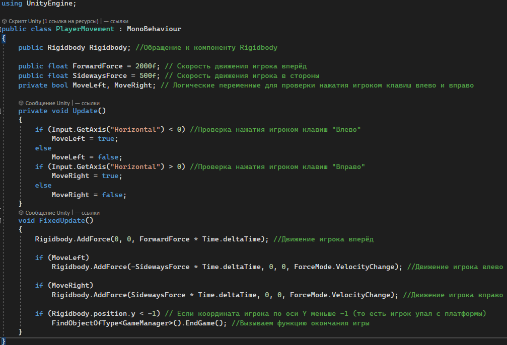
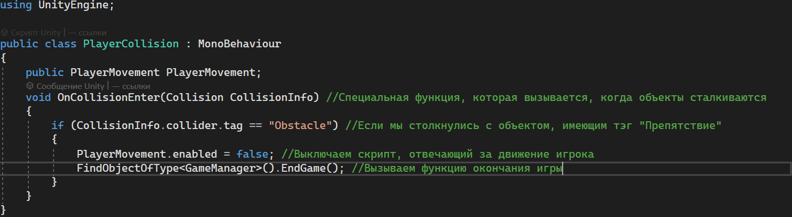
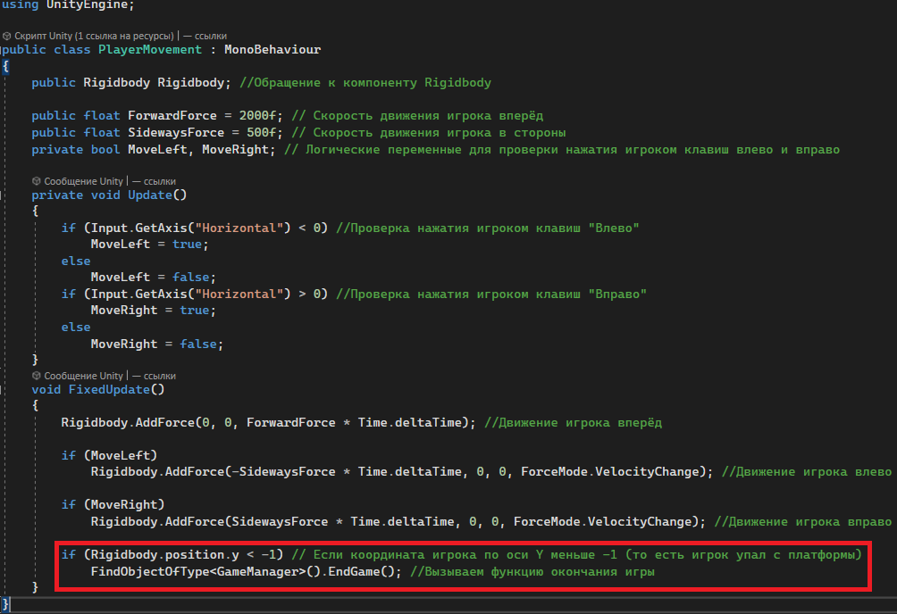
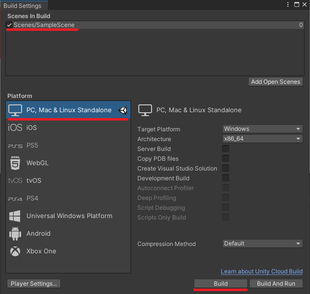

В этом уроке мы создадим игрового менеджера, который будет отвечать за перезапуск уровня в случае проигрыша. Как и всегда, когда мы создаём новый объект, нажимаем пкм в окне Иерархии и создаём в этот раз Пустой объект (Create Empty) и добавляем ему новый Скрипт (GameManager)

Чтобы всё работало корректно нам необходимо в наш старый скрипт под названием PlayerCollision дописать одну строчку кода

А в скрипт PlayerMovement дописать две строки кода

Мне остаётся лишь поздравить тебя с тем, что ты только что закончил создание своей первой игры на движке Unity. Теперь ты можешь экспортировать свою игру на платформу PC в окне Build Settings (File->Build Settings). Перетащи из Папки Scenes на Панели Ассетов Сцену SampleScene в окно Scenes In Build, нажми на кнопку Build и выбери папку, куда ты хочешь поместить свою игру

Этой папкой ты можешь поделиться со своими друзьями, чтобы они попытались пройти твою игру. А, если тебе понравилось создавать игры, то ты можешь продолжить постигать мастерство разработчика и в скором времени сделать вторую, ещё более интересную игру. У тебя всё получится;)